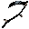

Roadmap to Alpha
Completion
~59% complete
1. World & Settlements
- Procedural settlements
- Houses, rooms, doors
- NPCs in settlements
- Roads between places
- Weather and day/night
- Wilderness around settlements
2. Character & Body
- Body parts
- Strength and endurance
- Mental strength
- Stamina
- Injuries
- Character progression
- Recovery
3. Combat
- Melee combat
- Weapons and equipment
- Positioning
- Body-part damage
- Combat injuries
- Death
4. Enemies & AI
- Perception
- Investigation and pursuit
- Combat behavior
- Retreat
- Searching
- Enemy types
5. Resources & Economy
- Gathering
- Butchering
- Inventory
- Crafting
- Repairing
- Buying and selling
- Loot
- Durability
6. NPCs & Interaction
- Dialogue
- Relationships
- NPC memory
- Requests and favors
- NPC reactions
- Roles and personalities
7. Healing & Survival
- Treating injuries
- Rest and sleep
- Food
- Recovery
- Overexertion
8. Skills & Development
- Skills through use
- Physical development
- Weapon proficiency
- Crafting skills
- Progression without levels
9. World Events
- NPCs reacting to events
- Requests appearing
- Creatures vs NPCs
- Persistent fallout
- Multiple solutions
10. Persistence
- Save and load
- Character persistence
- Injuries and equipment
- NPC changes
- World changes
Done Partial Not yet